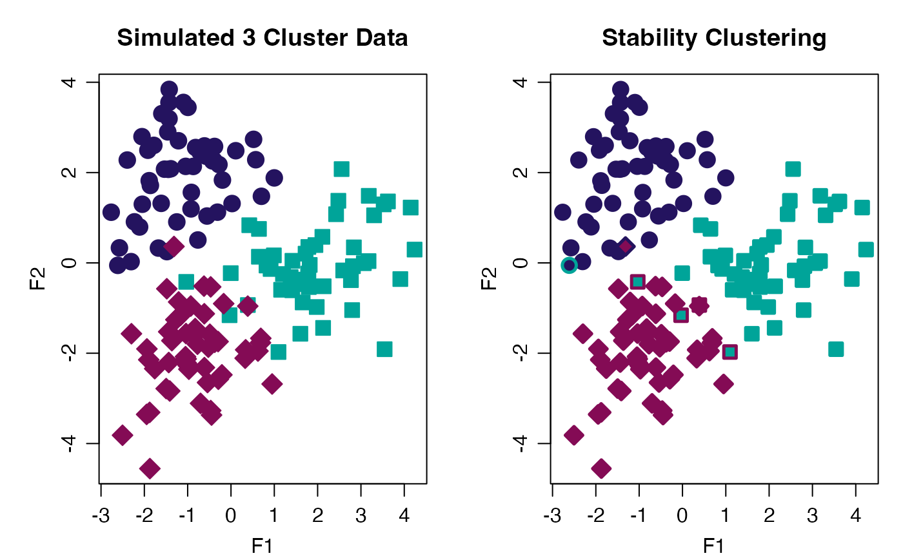

Perform Stability Clustering
stability_cluster.RdPartitioning Around Medoids (PAM) is used both because
is uses a more robust measurement of the cluster centers (medoids) and
because this implementation keeps the cluster labels consistent across
runs, a key feature in calculating the across run stability. This does
not occur using kmeans() where the initial cluster
labels are arbitrarily assigned.
Arguments
- data
A (
n x p) data matrix containing n samples and p features. Can also be a data frame where each row corresponds to a sample or observation, whereas each column corresponds to a feature or variable.- k
integer(1). The number of clusters.- iter
integer(1). The number of random subset iterations to perform.
Value
A n x (k + 1) dimensional tibble of clustering probabilities for
each k, plus a final column named "ProbK", which indicates
the "most probable" cluster membership for that sample.
Note
How do we make sure clusters are indexed the same as what comes out of k-means? Worried about index errors (but seems ok for now).
See also
pam()
Other cluster:
progeny_cluster()
Examples
stab_clust <- withr::with_seed(999, stability_cluster(progeny_data, k = 3, iter = 500))
table(actual = rep(1:3L, each = 50L), predicted = stab_clust$ProbK)
#> predicted
#> actual 1 2 3
#> 1 49 1 0
#> 2 0 46 4
#> 3 1 0 49
stab_clust$true_cluster <- rep(1:3L, each = 50L)
# View the stable clusters
stab_clust
#> # A tibble: 150 × 5
#> `k=1` `k=2` `k=3` ProbK true_cluster
#> <dbl> <dbl> <dbl> <dbl> <int>
#> 1 0.718 0.156 0.126 1 1
#> 2 0.684 0.172 0.144 1 1
#> 3 0.682 0.152 0.166 1 1
#> 4 0.664 0.19 0.146 1 1
#> 5 0.642 0.184 0.174 1 1
#> 6 0.7 0.154 0.146 1 1
#> 7 0.696 0.13 0.174 1 1
#> 8 0.644 0.154 0.202 1 1
#> 9 0.652 0.178 0.17 1 1
#> 10 0.682 0.154 0.164 1 1
#> # ℹ 140 more rows
# View the incorrectly clustered samples (n = 6)
filter(stab_clust, ProbK != true_cluster)
#> # A tibble: 6 × 5
#> `k=1` `k=2` `k=3` ProbK true_cluster
#> <dbl> <dbl> <dbl> <dbl> <int>
#> 1 0.37 0.442 0.188 2 1
#> 2 0.196 0.376 0.428 3 2
#> 3 0.228 0.346 0.426 3 2
#> 4 0.174 0.406 0.42 3 2
#> 5 0.162 0.388 0.45 3 2
#> 6 0.636 0.224 0.14 1 3
# Plot Stability Clusters
cols <- c("#24135F", "#00A499", "#840B55")
withr::with_par(list(mgp = c(2.00, 0.75, 0.0), mar = c(3, 4, 3, 1), mfrow = 1:2L), {
plot(progeny_data,
col = cols[stab_clust$true_cluster],
bg = cols[stab_clust$true_cluster],
pch = stab_clust$true_cluster + 20,
lwd = 1, cex = 1.75, main = "Simulated 3 Cluster Data")
plot(progeny_data,
col = cols[stab_clust$ProbK],
bg = cols[stab_clust$true_cluster],
pch = stab_clust$true_cluster + 20,
lwd = 2.5, cex = 1.5, main = "Stability Clustering")
})
